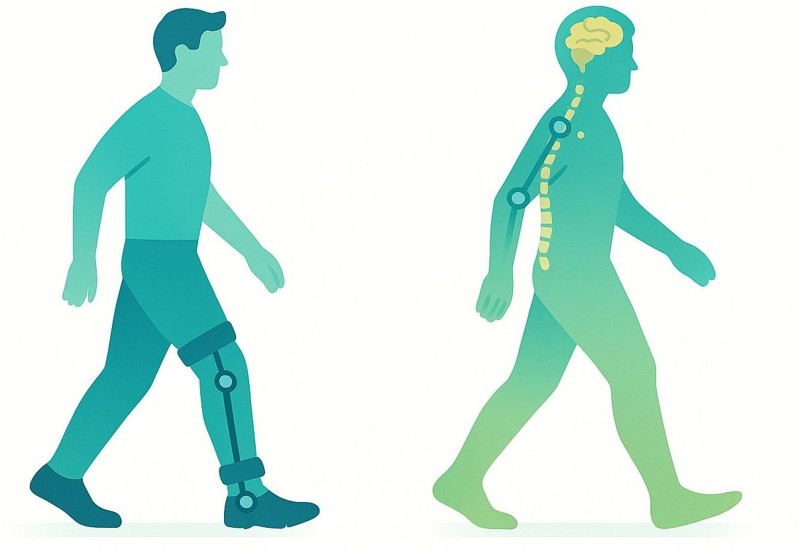
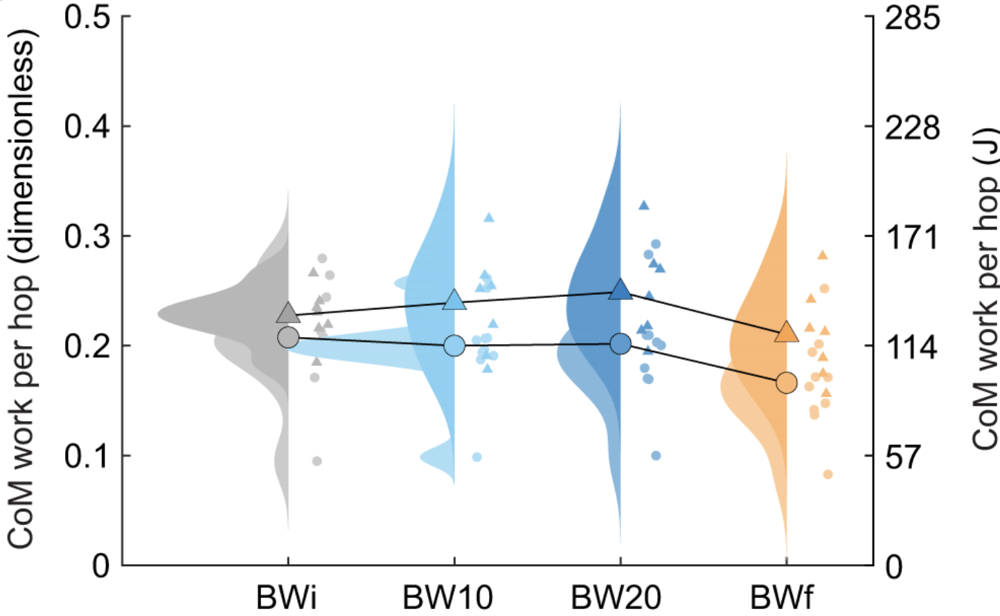
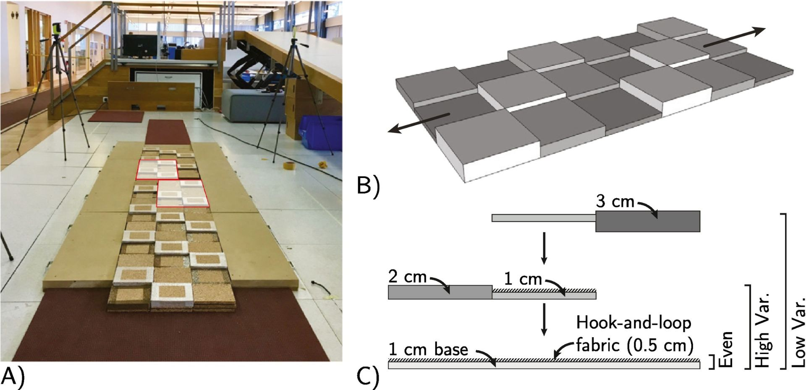

Our research leverages wearable robotics to understand and assist human movement, with the goal of advancing our understanding of motor control in both healthy and clinical populations.
By manipulating robotic behavior and sensory information during walking and other motor tasks, we explore how humans adapt to changing mechanical and sensory environments. These insights guide the development of targeted rehabilitation strategies and improve the design of assistive technologies for individuals with movement impairments.
Read more about our research
Manipulating mechanics and sensory information during movement to reveal how the body and nervous system coordinate locomotion.
Learn moreDeveloping training paradigms that leverage task error, sensory feedback, and neuromodulation to accelerate and retain motor learning.
Learn moreDeveloping device mechanics, control strategies, and feedback modalities that make wearable robotics more effective in rehabilitation.
Learn more
